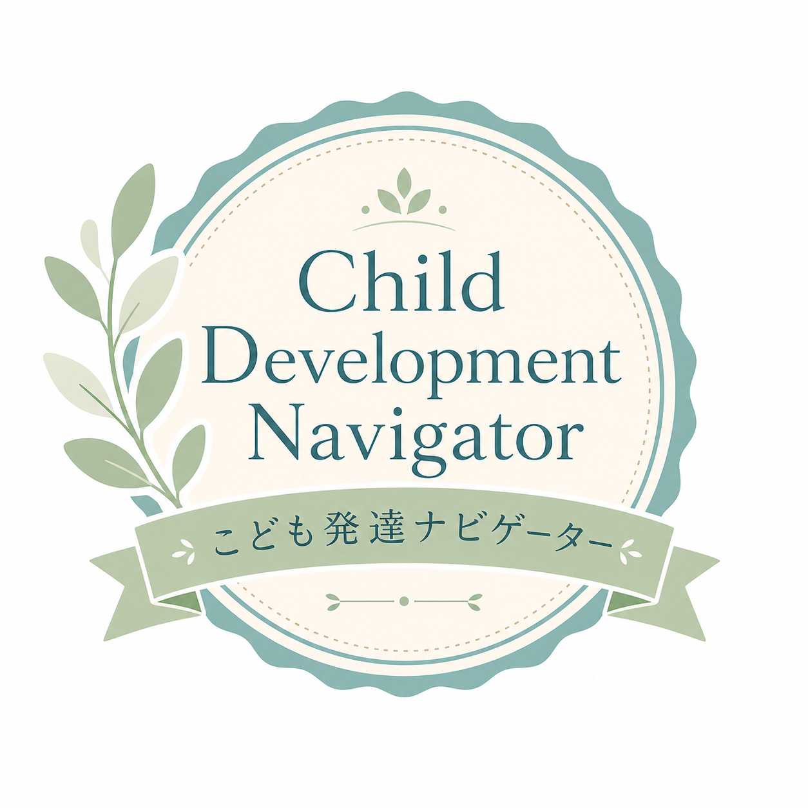

Certification Exam
全30問の4択問題です。制限時間は60分、25問以上正解で合格となり、合格後に認定証を保存できます。
この試験は、Step by step こども発達ナビゲーター認定講座の修了確認試験です。全30問の4択問題で、制限時間は60分です。25問以上正解で合格となり、合格後に認定証を保存できます。初回は1〜30問、再テストでは1〜40問の中からランダムに30問が出題されます。再テストは3回まで受験できます。
Result
Step by step 発達ナビゲーター認定証
あなたは、Step by step 発達ナビゲーター認定講座の所定の学習を修了し、認定試験に合格されたことをここに証します。
Step by step 髙橋 茜